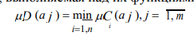
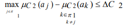

Лабораторная работа 9.
Исследование методов выбора рационального варианта системы защиты инфор-мации на основе экспертной информации
Цель работы
Изучить метод экспертной оценки информации, изучить методы выбора рационального варианта системы защиты на основе экспертной информации.
Теоретическая часть
Анализ методов решения задачи выбора рационального варианта
СЗИ
Принципиальными особенностями решения задачи выбора
рационального варианта СЗИ, определяющими метод ее решения являются:
многокритериальность задачи выбора;
не только количественное, но и качественное (нечеткое) описание пока-зателей качества СЗИ, задаваемых в виде требований;
при нечеткой постановке задачи влияние на выбор метода ее решения экспертной информации, определяющей предпочтение того или иного пока-зателя.
Общая постановка задачи многокритериальной оптимизации имеет следующий вид.
Пусть X x1 ,..., xi ,..., xn - вектор оптимизируемых параметров некоторой
системы S. Некоторое j-e свойство системы S характеризуется величиной j-гo показателя qi (X ); j 1, m . Тогда система в целом характеризуется вектором по-казателей Q q1,..., q j ,..., qm . Задача многокритериальной оптимизации сво-дится к тому, чтобы из множества Ms вариантов системы S выбрать такой ва-риант (систему S0), который обладает наилучшим значением вектора Q .
При этом предполагается, что понятие "наилучший вектор Q " предварительно сформулировано математически, т.е. выбран (обоснован) соответствующий крите-рий предпочтения (отношение предпочтения).
Анализ литературы показывает, что все многочисленные методы решения многокритериальных задач можно свести к трем группам методов:
метод главного показателя;
метод результирующего показателя;
лексикографические методы (методы последовательных уступок).
Метод главного показателя основан на переводе всех показателей качества, кроме ка-кого-либо однородного, называемого главным, в разряд ограничений типа равенств и неравенств. Присвоим главному показателю номер q1(S). Тогда задача сводится к од-нокритериальной задаче выбора системы S Ms , обладающей минимальным значением показателя q1(S) при наличии ограничений типа равенств и неравенств.
Методу главного показателя присущи следующие недостатки:
- В большинстве случаев нет достаточных оснований для того, чтобы считать какой-то один и притом вполне определенный показатель качества яв-ляется главным, а все остальные – второстепенными.
2. Для показателей качества q2(S), ..., qm(S), переводимых в разряд огра-ничений, достаточно трудно установить их допустимые значения.
Метод результирующего показателя качества основан на формировании обоб-щенного показателя путем интуитивных оценок влияния частных показателей ка-чества q1, ..., qm на результирующее качество выполнения системой ее функций. Оценки такого влияния даются группой специалистов – экспертов, имеющих опыт разработки подобных систем.
Наибольшее применение среди результирующих показателей качества получили аддитивный, мультипликативный и минимаксный показатели.
Аддитивный показатель качества представляет собой сумму взвешенных нормиро-ванных частных показателей.
Главным недостатком аддитивного показателя является то, что при его при-менении может происходить взаимная компенсация частных показателей. Это зна-чит, что уменьшение одного из показателей вплоть до нулевого значения может быть компенсировано возрастанием другого показателя. Для ослабления этого не-достатка вводятся специальные ограничения на минимальные значения частных показателей, на их веса, а также используются другие приемы.
Мультипликативный показатель качества образуется путем перемножения част-ных показателей с учетом их весовых коэффициентов.
Наиболее существенное отличие мультипликативного показателя от аддитивного заключается в том, что аддитивный показатель базируется на принципе справедли-вой абсолютной уступки по отдельным показателям, а мультипликативный — на принципе справедливой относительной уступки. Суть последнего заключается в том, что справедливым считается такой компромисс, когда суммарный уровень относительного снижения одного или нескольких показателей не превышает сум-марного уровня относительного увеличения остальных показателей.
Максиминный показатель. В ряде случаев вид результирующей целевой функ-ции достаточно трудно обосновать или применить. В подобных случаях возмож-ным простым путем решения задачи является применение максиминного показате-ля.
Лексикографический метод. Предположим, что показатели упорядочены по важ-ности.
Суть метода заключается в выделении сначала множества альтернатив с наилучшей оценкой по наиболее важному показателю. Если такая альтернатива единственная, то она считается наилучшей; если их несколько, то из их подмножества выделяются те, которые имеют лучшую оценку по второму показателю и т.д.
Выбор варианта СЗИ при равной важности требований Пусть имеется множество из m вариантов построения СЗИ:
A a1,...,a2 ,...,am
Для некоторого требования С (критерия оценки) может быть рассмотре-но нечеткое множество:
C c (a1 )a1; c (a2 )a2 ;...; c (am )am (7)
где c (ai ) 0,1 - оценка варианта аi, по критерию С, которая
характеризует степень соответствия варианта требованию, определенному кри-терием С.
Если имеется п требований: C1, C2, …,Cn, j 1, n , то лучшим считается
вариант, удовлетворяющий и требованию C1, C2, …,Cn. Тогда правило для выбора наилучшего варианта может быть записано в виде пересечения соответ-ствующих множеств:
D C1 C2 ... Cn (8)
Операции пересечения нечеткого множества соответствует операция
min, выполняемая над их функциями принадлежности:
В качестве лучшего выбирается вариант а*, имеющий наибольшее значение функции принадлежности:

Выбор варианта СЗИ по аддитивному критерию
Выбор варианта СЗИ лексикографическим методом
Применение этого метода при нечеткой информации о показателях качества (требованиях) СЗИ сводится к следующим операциям.
1°. Упорядочить требования к СЗИ по важности:
C 1 C 2 ... C j ... C n ; j 1, n
2°. С согласия ЛПР для каждого требования назначается величина допустимой уступки C j , j 1, n в пределах которой рассматриваемые варианты СЗИ счи-таются "практически равноценными".
3°. Для первого требования С1 формируется множество "практически рав-ноценных" вариантов, удовлетворяющих условию — множество 1 .
4°. Если 1 — множество содержит ровно один вариант, то он и считается наилучшим. Если 1 — множество содержит более одной альтернативы, то пе-реходим к рассмотрению всех вариантов множества 1, по требованию С2.
5°. Для второго требования С2 формируется 2 — множество вариантов из
множества 1 , удовлетворяющих условию:

6°. Если 2 — множество содержит ровно один вариант, то он и считается наилучшим; если более одного — рассматриваем эти варианты по требованию С3 и т.д.
7°. Если все требования последовательно пересмотрены и в результате получа-ем — множество 1 2 ... n , содержащее более одной альтернати-вы, то возможно применить два подхода:
уменьшить величину допустимой уступки C j начиная с первого по важно-сти требования и повторить все шаги решения;
представить ЛПР окончательный выбор лучшего варианта